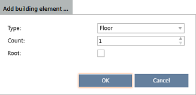
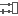

建筑结构
这Building structure任务允许您根据您的项目构建建筑物的内容。它提供了许多元素（建筑物和建筑元素）来实现这一点。建筑结构元素的默认名称设置在Settings > Naming defaults > Object names.
Object names tab
1 | 任务选择器 | 2 | 工具栏 |
3 | 建筑结构表 | 4 | 详细信息窗格 |
5 | 上下文菜单（建筑结构表） |
| |
① Task selector
任务 | 描述 |
|---|---|
|
建筑结构 | 当前任务 |
中央职能 | |
设备列表 | |
应用和设备概述 | |
证书管理 | |
网络检查 | |
BACnet/SC |
② Toolbar
命令 | 描述 |
|---|---|
|
分割视图 | 垂直分割工作区域以获得同一建筑物的两个视图，允许您将元素从一个视图移动到另一个视图。 |
| 将视图重置为一个工作区域。 |
展示厅 | 显示建筑结构内的房间。 |
显示设备 | 显示建筑结构内的设备。 |
锁定/解锁 | 锁定/解锁设备以进行编辑。在开始在线会话之前必须锁定设备。 |
添加建筑元素  | 将新的建筑元素（例如地板）添加到列表的末尾。选择Root为了将建筑元素添加到层次结构的顶层。您可以选择以下建筑元素：
单击按钮旁边的箭头输入要添加的元素数量。 |
添加设备 | 打开Add devices 窗户。 |
添加应用模板 | 打开Configuration > Application selection可以将新的应用程序模板添加到项目中。 |
删除 | 删除所选元素及其子元素。 Note 删除自动化站不会删除相应的房间，因为自动化站不必位于同一个房间。 |
 移除分割
移除分割③ Building structure table
柱子 | 描述 |
|---|---|
|
地位 | 元素的状态。只读。 |
姓名 | 建筑结构元素和文件夹的名称： 建筑：建筑结构中的第一个结构元素。
区域 分区 部分
 植物房间在 ABT 站点中定义。 ABT Pro 项目中定义的房间。
ABT 站点中定义的设备。 ABT Pro 项目中定义的设备。
设备状态信息:
Unplaced rooms：列出没有位置的区域。未放置的房间可以移动到建筑结构中。 Unplaced devices：列出没有位置的设备。未放置的设备可以移动到建筑结构中。 Unused devices：列出设备，仅包含未放置的区域。如果将未使用的设备移动到建筑结构中，则所有包含区域都将放置在同一建筑元素中。 Unassigned room segments：列出当前没有房间的房间段。 Freely programmable automation stations：列出在 ABT Pro 中创建的自动化站，不链接到建筑结构。要在 ABT 站点中可见，必须在 ABT Pro 中保存并编译自动化站。 |
描述 | 建筑结构元素的描述。特殊文件夹包含的元素数量，例如Unplaced rooms，也显示在Description场地。 |
地点 | 设备的位置。 |
设备类型 | 设备类型名称，例如DXR2.E10。 |
地址 | IP address or MAC address. |
开发。研究所。 # | 与 BACnet 设备关联的设备实例号。 |
打包出发 | Pack & Go 包的名称。该名称与输入的名称相对应Work package name导出过程中的字段。 |
Equip-ID | 设备外壳的设备名称。 |
序列号 | 设备的序列号。设备的序列号可以通过使用条形码扫描仪或在调试后读回数据时自动添加。 |
最后行动 | 有关设备在线活动的信息。仅适用于具有在线功能的设备。 |
段使用 | 房间段的使用。 |
自动化站 | 仅适用于地区。定义该区域的自动化站的名称和类型。控制器类型在括号中指示。该信息是只读的。 |
模板 | 仅适用于地区。自动化站所基于的应用程序模板的名称。 |
 地板：建筑结构的结构元素（例如地板）。
地板：建筑结构的结构元素（例如地板）。 全球区域
全球区域 房间部分。
房间部分。 Device update is required
Device update is required defined as time manager
defined as time manager defined as supervision device
defined as supervision device④ Details pane
The contents of the Details pane vary depending on the selected element.
Building element details
Details pane of the device version ≤ 1.5
Details pane of the device version ≥ 1.6
Room and segment details
Application template details
⑤ Context menu (Building structure table)
命令 | 描述 |
|---|---|
|
编辑 | 突出显示选定的列值以进行重命名。 |
删除 | 删除所选元素及其子元素。 Note 删除自动化站不会删除相应的房间，因为自动化站不必位于同一个房间。 |
转到配置 | 打开Configuration > Application configuration您可以在其中重新配置所选的应用程序模板。 Note |
转到工程 | 打开Engineering成分。 Note |
前往编程 | 打开Programming编辑。 |
开始/stop模拟 | 开始对所选设备进行 /stops 模拟以测试其逻辑工作流程。 |
转到应用程序和设备概述 | 显示选定的自动化站Application & device overview任务。当选择已在 ABT Pro 中创建的房间或自动化站时，该命令将在 ABT Pro 中打开相应的项目。 |
Go to ABT Pro | 打开ABT Pro自由可编程自动化站所属的项目。 |
添加建筑物 | 将新建筑物（新建筑结构）添加到列表末尾。 |
添加建筑元素 | 将新的建筑元素（例如地板）添加到列表的末尾。 |
添加设备 | 打开Add devices 窗户 |
转到启动 | 打开Startup成分。 |
导入数据 | 打开一个对话框，您可以在其中指定要导入的 xml 文件。 |
创建导出 | 打开Create Exports对话框创建可在管理站 Desigo CC 中使用的数据包，或用于设计和组装控制面板 (CAD)。 |
创建打包 | 打开Create Pack&Go用于创建 Pack & Go 文件的对话框。 |
从 Pack&Go 解锁 | 解锁已通过 Pack & Go 流程锁定的建筑元素或设备。当建筑物中的所有设备都被解锁时，应用模板和建筑物也被解锁。 解锁后，设备的状态字段设置为Pack & GotoModified. |
报告 | 打开Select report对话框来选择要在选定上下文中创建的报告。 |
设定委托 | 将所选设备的状态设置为Commissioning done. |
导出项目中的日历 | 根据所选级别的建筑物或楼层创建日历条目的完整项目报告。 |
应用帮助 | 打开相应的房间帮助文件。不适用于植物。 |
特性 | 打开详细信息窗格。 |
Further information
- Details pane
- Defining a building structure
- Adding devices
- Adding multiple devices
- Copying/duplicating devices
- Moving devices
- Moving room segments
- Deleting devices
- I/O assignment (Details pane)
- Changing the certificate authority (None/internal/external)
- Adding the serial number
- Working with the calendar manager
- Creating data exports
- Importing data
- Assigning touch panels to operating and monitoring devices
- Performing program simulation
- Customizing BACnet object instance numbers
- Pack & Go workflow